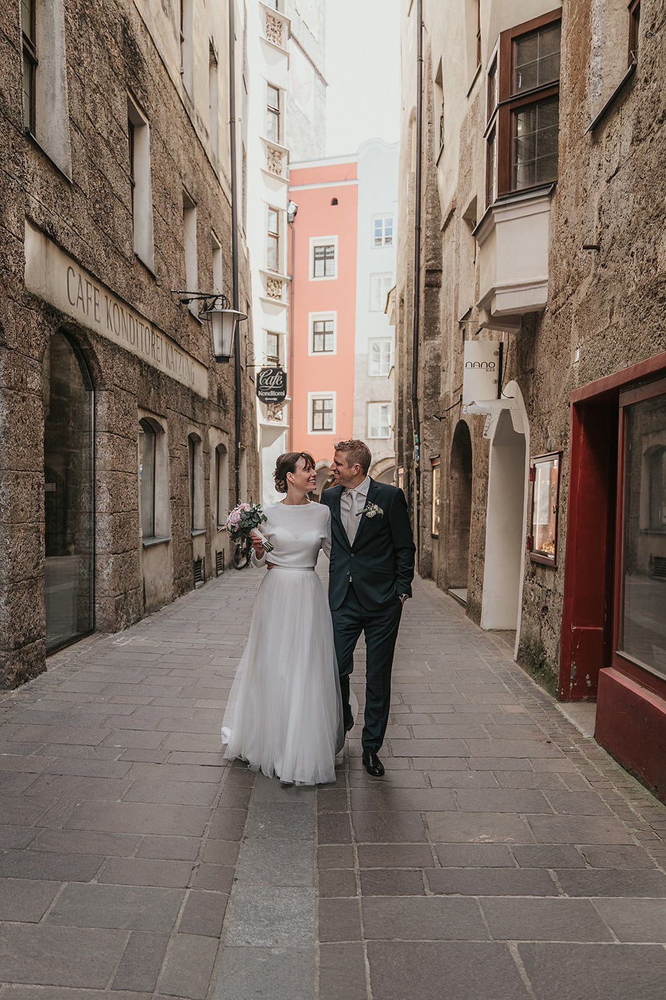
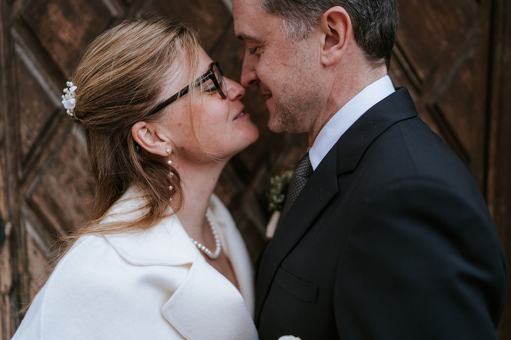

Standesamt InnsbruckRegistry office Innsbruck
Standesamt & kleine HochzeitenRegistry office & small weddings
Eure Ziviltrauung in Innsbruck – ein kurzer, echter, tiefer Moment. Kein Stress, keine Inszenierung. Ich dokumentiere mit Ruhe und Gespür, was zwischen euch passiert: das Lachen vor dem Rathaus, das Zittern beim Ja-Wort, der erste Blick danach.Your civil ceremony in Innsbruck – a short, real, deep moment. No stress, no staging. I document with calm and instinct what happens between you: the laughter before the town hall, the trembling at the vows, the first glance after.
Jetzt anfragenEnquire now
Der ehrlichste Moment des ganzen Tages.The most honest moment of the whole day.
Das Standesamt hat keinen Showcharakter. Es ist kurz, dicht, echt. Zwei Menschen, ein Ja-Wort, ein Moment, der alles verändert. Genau das ist fotografisch eines der stärksten Ereignisse überhaupt – wenn man es wirklich sieht und nicht nur ablichtet.The registry office has no show to it. It's short, dense, real. Two people, one "yes", a moment that changes everything. That is one of the strongest things to photograph – when you truly see it rather than just record it.
Innsbruck bietet dafür eine außergewöhnliche Kulisse: historische Räume, die Altstadt danach, der Inn, die Berge – in wenigen Minuten Fahrt seid ihr mitten in der Natur.Innsbruck offers an extraordinary backdrop: historic rooms, the old town afterwards, the river Inn, the mountains – a few minutes' drive and you're out in nature.

Innsbruck & UmgebungInnsbruck & around
Stadt und Berge in einem.City and mountains in one.
Ihr seid in wenigen Minuten aus der Stadt heraus – und plötzlich stehen die Berge vor euch, so nah wie in kaum einer anderen Hauptstadt. Ich kenne die Orte und das Licht zu jeder Tageszeit und weiß, wann wir wo sein müssen. So könnt ihr einfach da sein, ohne Logistik-Stress.Within minutes you're out of the city – and suddenly the mountains stand before you, closer than in almost any other capital. I know the places and the light at every hour, and when we need to be where. So you can simply be present, without logistics stress.
- 01Goldenes Dachl & Altstadt
- 02Rathaus · Maria-Theresien-StraßeTown hall · Maria-Theresien-Str.
- 03Inn mit NordkettenblickRiver Inn & Nordkette view
- 04Hofgarten
- 05Nordkette & AlmenNordkette & alpine huts
- 06Seefeld & UmgebungSeefeld & surroundings
AblaufHow it works
Vom ersten Gedanken bis zu den Bildern.From the first thought to the photos.
AnfrageEnquiry
Ihr schreibt mir kurz Datum, Ort und ein paar Worte zu euch.You send me the date, place and a few words about you.
VorgesprächPre-talk
Wir klären Ablauf, Timing und die schönsten Orte nach der Trauung.We plan the flow, timing and the best spots after the ceremony.
TrauungCeremony
Im Saal bin ich leise und unsichtbar – kein Blitz, keine Posen.In the room I'm quiet and unseen – no flash, no poses.
PortraitsPortraits
Danach führe ich euch zu Altstadt, Wasser oder Bergen – so weit ihr möchtet.Afterwards to the old town, water or mountains – as far as you like.
Mehr als ein Fotograf am Standesamt.More than a photographer at the registry office.
Auch für kleine FeiernFor small celebrations
Ob ihr danach im Stadel feiert, ins Restaurant geht oder in die Berge fahrt – ich begleite euch so weit, wie ihr möchtet.Whether you celebrate in a barn, go to a restaurant or head into the mountains – I accompany you as far as you like.
Internationale PaareInternational couples
Viele internationale Paare wählen Innsbruck. Ich spreche Deutsch und Englisch und kenne die Abläufe gut.Many international couples choose Innsbruck. I speak German and English and know the procedures well.
Kein Gäste-LimitNo guest minimum
Trauung zu zweit? Gerne. Mit Familie? Auch. Das Format bestimmt ihr – ich passe mich an.Just the two of you? Gladly. With family? Also. You decide the format – I adapt.
FAQ
Häufige FragenCommon questions
Wo ist das Standesamt in Innsbruck?Where is the registry office in Innsbruck?
Im Rathaus in der Maria-Theresien-Straße 18, mitten in der Altstadt – umgeben von goldenen Dächern, historischen Fassaden und den nahen Gipfeln der Nordkette.In the town hall at Maria-Theresien-Straße 18, in the middle of the old town – surrounded by golden roofs, historic façades and the nearby peaks of the Nordkette.
Fotografierst du auch ganz kleine Hochzeiten – nur zu zweit?Do you photograph very small weddings – just the two of us?
Sehr gerne. Eine reine Standesamts-Trauung zu zweit oder mit wenigen Gästen ist oft das Intimste und Ehrlichste – und ich dokumentiere sie mit vollem Engagement.Very gladly. A registry-office ceremony just for two or with a few guests is often the most intimate and honest – and I document it with full dedication.
Wie lange dauert eine Trauung?How long is the ceremony?
Die eigentliche Zeremonie dauert meist 20 bis 40 Minuten. Ich empfehle, davor und danach Zeit für Portraits einzuplanen.The ceremony itself usually takes 20 to 40 minutes. I recommend leaving time before and after for portraits.
Sprichst du Englisch für internationale Paare?Do you speak English for international couples?
Ja. Ich spreche Deutsch und Englisch, kenne die Abläufe und helfe euch, bei den Dokumenten den Überblick zu behalten.Yes. I speak German and English, know the procedures and help you keep track of the paperwork.
Können wir danach im Freien oder auf einer Alm feiern?Can we celebrate outdoors or at an alpine hut afterwards?
Absolut. Viele Paare kombinieren die Innsbrucker Trauung mit einer Feier auf einer Alm oder in den Bergen. Ich begleite euch durch den ganzen Tag.Absolutely. Many couples combine the Innsbruck ceremony with a celebration at an alpine hut or in the mountains. I accompany you through the whole day.
AnfrageEnquiry
Erzählt mir von euch und eurem Tag.Tell me about you and your day.
Standesamt, kleine Hochzeit, Familie oder Porträt – schreibt mir kurz, worum es geht. Ich antworte innerhalb von zwei Werktagen.Registry office, small wedding, family or portrait – tell me briefly what it's about. I reply within two working days.
Termin anfragenEnquire now